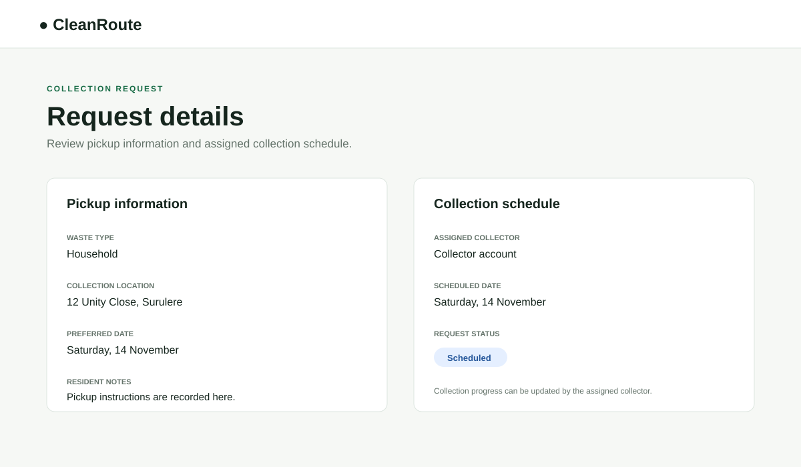

Resident accounts
Residents can register, sign in, and create waste collection requests.
02 / COMMUNITY SERVICES
A waste-collection management application that connects resident requests, administrator scheduling, and collector completion workflows.
THE PROBLEM / THE APPROACH
Waste collection involves several people and handoffs. Residents need a way to request a pickup and provide useful details. Administrators need to review requests and assign schedules. Collectors need a focused view of their daily work and a way to confirm completed pickups.
I built CleanRoute as a small role-based application around that operational flow. The same system gives each user type the actions and information that match its responsibilities.
CORE FEATURES
Residents can register, sign in, and create waste collection requests.
Capture waste type, collection location, notes, and preferred date for pickup.
Administrators review requests, schedule collections, and assign collectors.
Collectors see their assigned schedules and confirm completed pickups.
Administrators can review operational reports and user accounts.
Residents, Collectors, and Administrators have distinct application permissions.
INTERFACE PREVIEWS
The repository includes these SVG interface previews to communicate the dashboard and request detail layouts.


TECHNICAL DETAILS
CleanRoute uses ASP.NET Core Razor Pages with C# page models and services, MySQL persistence, and a custom responsive interface. Authentication uses cookie authentication with PBKDF2 password hashing. The project deliberately avoids a CSS framework and an AI feature so the application code and interface remain straightforward.